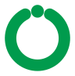
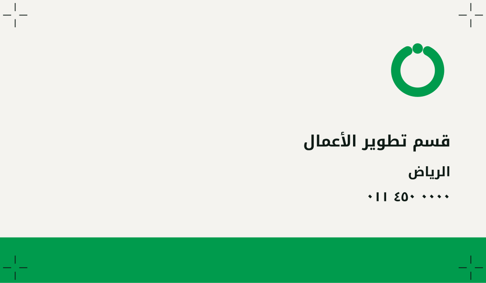
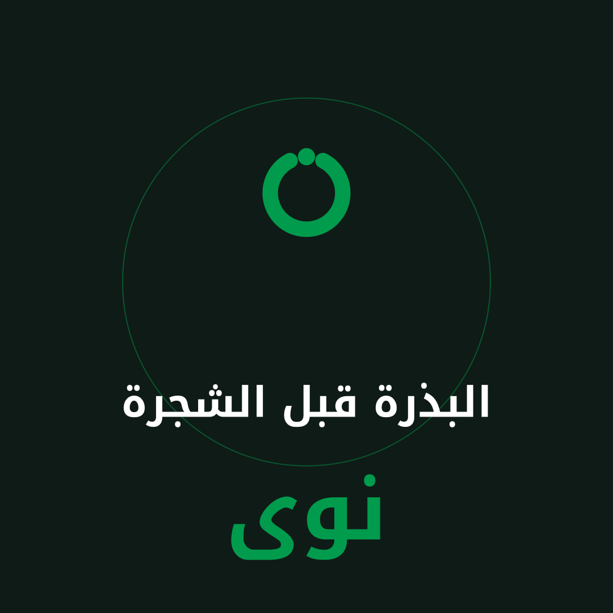
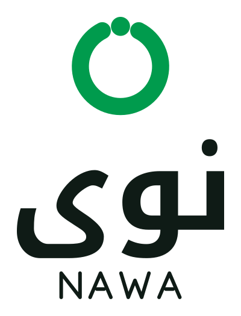
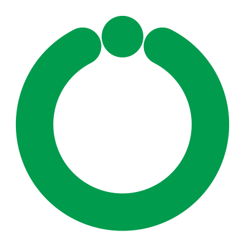

هذه صفحة واحدة من دليل هوية بنيناها اليوم بالكامل: الشعار بثلاث صيغ، البناء الهندسي، الألوان مقيسة على ملف طباعة حقيقي، التطبيقات، وكل الملفات المصدرية جاهزة للتحميل والفحص قبل أي اتفاق.
ليست علامة عميل سابق، ولا عملاً منشوراً. اخترنا الاسم وصمّمنا الشعار وبنينا هذه الصفحة اليوم من أجل هذا العرض تحديداً، لأن عرض عمل عميل آخر دون إذنه ليس من حقنا، ولأن المطلوب هنا أن ترى طريقة الشغل لا معرضاً. كل رقم مكتوب في هذه الصفحة مقيس من الملفات نفسها، وتستطيع التحقق منه بتحميلها.
هذه هي مخرجات هذا النموذج فعلياً. حمّلها وافتحها قبل أن تقرر أي شيء.
ملفات PDF وEPS لا تحتوي على أي خط مرتبط: الحروف محوَّلة إلى مسارات، فالشعار يفتح على أي جهاز ولو لم يكن الخط مثبتاً عليه. فُحص ذلك آلياً بأمر pdffonts على كل ملف، والبناء يتوقف إذا ظهر خط واحد.
ملف الكرت قيس بعد توليده فخرج ٩٦٫٠ × ٥٦٫٠ مم، أي مقاس ٩٠×٥٠ مع ٣ مم قصاصة من كل جهة، وعلامات القص خارج حدود القص.
قيم CMYK في جدول الألوان مُحوَّلة عبر ملف ICC حقيقي، لا بالتقدير.
الملف الوحيد غير الموجود هنا هو AI الأصلي، والسبب مشروح في آخر الصفحة بلا تجميل.
الشكل كله دائرة واحدة وسُمك خط واحد وفتحة واحدة. هذا ما يجعله يصغر دون أن ينهار، ويجعل أي شخص يعيد رسمه بنفس النسب بعد سنوات.

أكثر ما يُفسد الهوية بعد التسليم أن لون الموقع لا يطابق لون المطبوعات. السبب دائماً واحد: قيم CMYK في الدليل كُتبت بالتقدير. هنا حُوّل كل لون عبر ملف ICC، ثم أُعيد تحويله إلى الاتجاه المعاكس لقياس كم يتحرك اللون فعلياً عند الطبع.
اللون الأساسي
النصوص والأسطح الداكنة
الخلفيات
الأزرق التقني #0B6CF0 هو اللون الذي يطلبه أغلب العملاء. حين حوّلناه إلى CMYK خرج بانزياح ΔE 33.6، أي أن المطبعة لا تستطيع إنتاجه أصلاً: يصل إلى الورق باهتاً ومائلاً للرمادي، بينما الأخضر المختار يتحرك ΔE 2.0 فقط. اخترنا الأخضر بعد القياس لا قبله، وهذا هو الفرق بين لون يُعجب على الشاشة ولون يعيش على الكرت واللوحة والعلبة.
القياس تمّ على ملف CMYK عام للورق المطلي. ملف مطبعتك قد يختلف قليلاً، ولهذا تُثبَّت الأرقام النهائية على البروفة لا على الشاشة.
عن Pantone: لا يصحّ أن يُشتق رقم بانتون من شاشة، لأن دفاتر بانتون ألوان حبر مطبوعة فعلياً. نحن نرشّح أقرب رقمين ونكتب في الدليل أن القرار يُحسم بمطابقة الدفتر الورقي عند المطبعة. أي دليل يمنحك رقم بانتون مقطوعاً به دون بروفة يمنحك رقماً لا يلزم أحداً.
أما نصوص الجسم فبخط نسخي واضح على المقاسات الصغيرة، لأن العنوان يُرى والنص يُقرأ. استعملنا Noto Kufi Arabic للعناوين وNoto Sans Arabic للنصوص، وكلاهما برخصة SIL OFL مفتوحة، أي أنك تثبّتهما على أجهزة فريقك وتعطيهما لأي مطبعة أو مطوّر دون رسوم ودون أن تشتري ترخيصاً لكل مستخدم جديد.


صفحة الممنوعات هي الصفحة التي تحمي الهوية بعد أن نسلّمها، لأن من سيستعملها غداً ليس من طلبها اليوم.


هذه الصفحة أُنجزت دون أن نعرف شيئاً عن نشاطك، لأن الإعلان لم يذكره. الهوية الحقيقية لا تُبنى هكذا، وهذه هي الأسئلة التي تفصل بين شعار جميل وهوية تخدم عملاً.
والسوق: السعودية فقط أم الخليج؟
الثنائية تغيّر بناء الشعار من أوله، لا تُضاف في آخره.
أفراد أم شركات أم جهات حكومية؟ هذا يحدّد اللهجة البصرية.
لوحة محل، تغليف، ملف تعريفي، أم شاشات فقط؟
تطوير لعلامة موجودة يختلف تماماً عن بناء من الصفر.
يُفضّل التأكد قبل الرسم، لا بعد الطباعة.